\[
OR = \frac{\frac{p_1}{1 - p_1}}{\frac{p_2}{1 - p_2}}
\]
OR ranges between 0 and \(+\infty\). When \(OR = 1\) the odds for the two conditions are equal
An e.g. \(OR = 3\) means that being in the condition at the numerator increase 3 times the odds of success
Example: Passing the exam - Odds Ratio
# or <- function(p1, p2) odds(p1) / odds(p2)p11<-mean(with(exam, passed[tv_shows==1]))# passing exam | tv_showsp10<-mean(with(exam, passed[tv_shows==0]))# passing exam | not tv_showsp11
#> [1] 0.1
p10
#> [1] 0.86
or(p11, p10)
#> [1] 0.01808786
Why using these measure?
The odds have an interesting property when taking the logarithm. We can express a probability \(p\) using a scale ranging \([-\infty, +\infty]\)
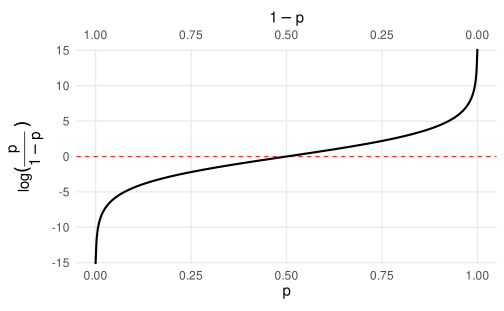
Another example, Teddy Child
We considered a Study conducted by the University of Padua (TEDDY Child Study, 2020)1. About post-partum depression. You can access the data using data("teddy") or within the data/ folder.
ID
Children
Fam_status
Education
Occupation
Age
Smoking_status
Alcool_status
Depression_pp
Parental_stress
Alabama_involvment
MSPSS_total
LTE
Partner_cohesion
Family_cohesion
Depression_pp01
1.000
1.000
Married
High school
Full-time
42.000
No
No
No
75.000
36.000
6.500
5.000
4.333
2.917
0.000
2.000
1.000
Married
High school
Full-time
42.000
No
No
No
51.000
41.000
5.500
5.000
4.167
3.000
0.000
3.000
1.000
Married
High school
Full-time
44.000
No
No
No
76.000
42.000
1.417
4.000
3.000
2.500
0.000
4.000
2.000
Married
High school
Full-time
48.000
No
No
No
88.000
39.000
1.083
4.000
2.167
2.667
0.000
5.000
3.000
Married
Degree or higher
Full-time
39.000
Yes
Yes
No
67.000
35.000
7.000
2.000
4.167
2.667
0.000
6.000
2.000
Married
Degree or higher
Full-time
38.000
Ex-smoker
No
No
61.000
36.000
3.333
0.000
3.000
2.583
0.000
Another example, Teddy Child
We want to see if the parental stress increase the probability of having post-partum depression:
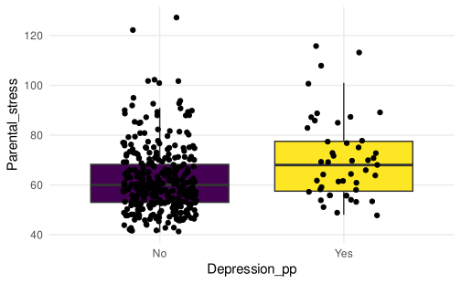
Another example, Teddy Child
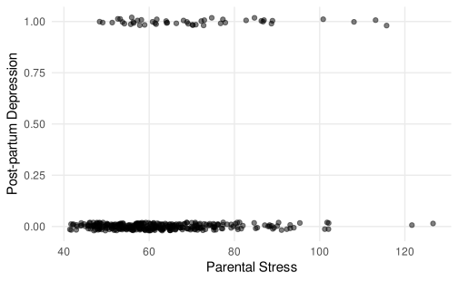
Another example, Teddy Child
Let’s start by fitting a linear model Depression_pp ~ Parental_stress. We consider “Yes” as 1 and “No” as 0.
fit_teddy_lm<-lm(Depression_pp01~Parental_stress, data =teddy)summary(fit_teddy_lm)
#>
#> Call:
#> lm(formula = Depression_pp01 ~ Parental_stress, data = teddy)
#>
#> Residuals:
#> Min 1Q Median 3Q Max
#> -0.42473 -0.13768 -0.10003 -0.05768 0.94702
#>
#> Coefficients:
#> Estimate Std. Error t value Pr(>|t|)
#> (Intercept) -0.172900 0.077561 -2.229 0.026389 *
#> Parental_stress 0.004706 0.001201 3.919 0.000105 ***
#> ---
#> Signif. codes: 0 '***' 0.001 '**' 0.01 '*' 0.05 '.' 0.1 ' ' 1
#>
#> Residual standard error: 0.3239 on 377 degrees of freedom
#> Multiple R-squared: 0.03915, Adjusted R-squared: 0.0366
#> F-statistic: 15.36 on 1 and 377 DF, p-value: 0.0001054
Another example, Teddy Child
Let’s add the fitted line to our plot:
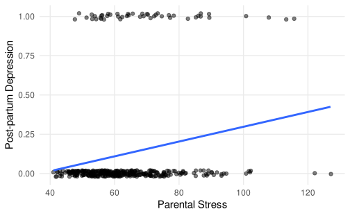
Another example, Teddy Child
… and check the residuals, pretty bad right?
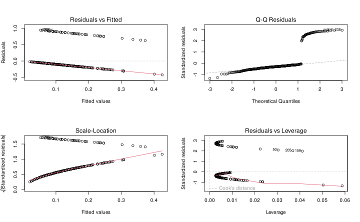
Another example, Teddy Child
As for the exam example, we could compute a sort of contingency table despite the Parental_stress is a numerical variable by creating some discrete categories (just for exploratory analysis):
Ideally, we could compute the increase in the odds of having the post-partum depression as the parental stress increase. In fact, as we are going to see, the Binomial GLM is able to estimate the non-linear increase in the probability.
If you see the details about the Binomial distribution, \(\mu = pm\) where \(p\) is the probabiluty of success and \(m\) the number of trials. When \(m = 1\) we have the special case of a Bernoulli distribution. In this case we have \(n\) (\(n\) is the sample size) independent Bernoulli distributions.
Binomial GLM
The random component of a Binomial GLM the binomial distribution with parameter \(p\)
The systematic component is a linear combination of predictors and coefficients \(\boldsymbol{\beta X}\)
The link function is a function that map probabilities into the \([-\infty, +\infty]\) range.
Logit Link
The logit link is the most common link function when using a binomial GLM:
Thus with a single numerical predictor \(x\) the relationship between \(x\) and \(p\) in non-linear on the probability scale but linear on the logit scale.
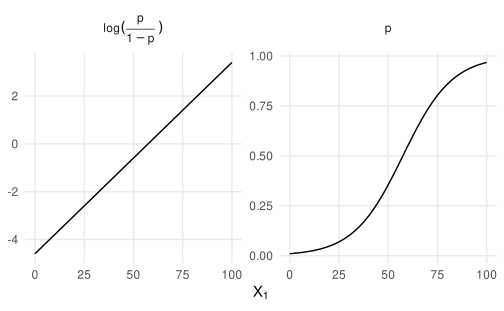
Logit Link
The main problem when using the logit link (and any link function beyond the identity) is that effects are linear on the link function scale but non-linear on the response scale.
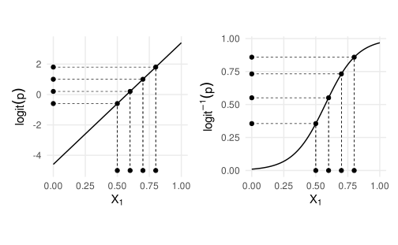
Model fitting in R
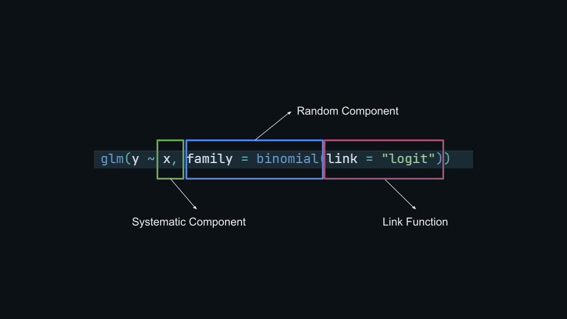
The big picture…
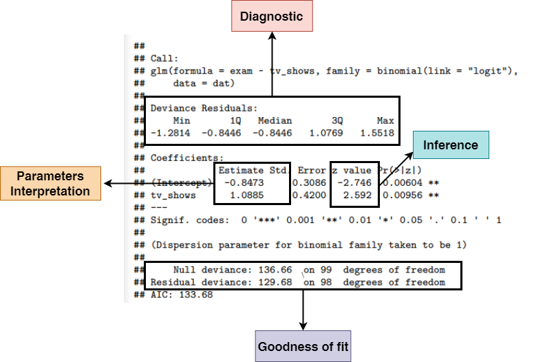
Model fitting in R
We can model the contingency table presented before. We put data in binary form:
Let’s start from the simplest model (often called null model) where there are no predictors:
fit0_exam<-glm(passed~1, data =exam, family =binomial(link ="logit"))summary(fit0_exam)
#>
#> Call:
#> glm(formula = passed ~ 1, family = binomial(link = "logit"),
#> data = exam)
#>
#> Coefficients:
#> Estimate Std. Error z value Pr(>|z|)
#> (Intercept) -0.08004 0.20016 -0.4 0.689
#>
#> (Dispersion parameter for binomial family taken to be 1)
#>
#> Null deviance: 138.47 on 99 degrees of freedom
#> Residual deviance: 138.47 on 99 degrees of freedom
#> AIC: 140.47
#>
#> Number of Fisher Scoring iterations: 3
Intercept only model
When fitting an intercept-only model, the parameter is the average value of the y variable:
In R, the \(logit(p)\) is computed using qlogis() that is the q + logis combination of functions to work with probability distributions. The \(logit^{-1}\) thus the inverse of the logit function is plogis():
# average y on the respo nse scalemean(exam$passed)
If you are not sure about how to transform using the link function you can directly access the family() object in R that contains the appropriate link function and the corresponding inverse.
bin<-binomial(link ="logit")bin$linkfun()# the same as qlogisbin$linkinv()# the same as plogis
Model with \(X\)
Now we can add the tv_shows predictor. Now the model has two coefficients. Given that the tv_shows is a binary variable, the intercept is the average y when tv_shows is 0, and the tv_shows coefficient is the increase in y for a unit increase in tv_shows:
fit_exam<-glm(passed~tv_shows, data =exam, family =binomial(link ="logit"))summary(fit_exam)
#>
#> Call:
#> glm(formula = passed ~ tv_shows, family = binomial(link = "logit"),
#> data = exam)
#>
#> Coefficients:
#> Estimate Std. Error z value Pr(>|z|)
#> (Intercept) 1.8153 0.4076 4.454 8.43e-06 ***
#> tv_shows1 -4.0125 0.6231 -6.439 1.20e-10 ***
#> ---
#> Signif. codes: 0 '***' 0.001 '**' 0.01 '*' 0.05 '.' 0.1 ' ' 1
#>
#> (Dispersion parameter for binomial family taken to be 1)
#>
#> Null deviance: 138.469 on 99 degrees of freedom
#> Residual deviance: 73.005 on 98 degrees of freedom
#> AIC: 77.005
#>
#> Number of Fisher Scoring iterations: 4
Model with \(X\)
Thinking about our data, the (Intercept) is the probability of passing the exam without watching tv-shows. The tv_shows (should be) the difference in the probability of passing the exam between people who watched or did not watched tv-shows, BUT:
we are on the logit scale. Thus we are modelling log(odds) and not probabilities
a difference on the log scale is a ratio on the raw scale. Thus taking the exponential of tv_shows we obtain the ratio of odds of passing the exam watching vs non-watching tv-shows. Do you remember something?
Model with \(X\)
The tv_shows is exactly the Odds Ratio that we calculated on the contingency table:
# from model coefficientsexp(coef(fit_exam)["tv_shows1"])
#> tv_shows1
#> 0.01808786
# from the contingency tableor(mean(exam$passed[exam$tv_shows==1]),mean(exam$passed[exam$tv_shows==0]))
#> [1] 0.01808786
Binomial vs Binary
There are several practical differences between binomial and binary models:
data structure
fitting function in R
residuals and residual deviance
type of predictors
Binomial vs Binary data structure
The most basic Binomial regression is a vector of binary \(y\) values and a continuous or categorical predictor. Let’s see a common data structure in this case:
Code
n<-30df<-data.frame(id =1:n)df$x<-sim_n_x(df, list(level ="obs", f =runif))b0<-qlogis(0.01)b1<-8df|>sim_data(~x, c(b0, b1), family =binomial(), which.mu ="prob", rng.arg =list(size =1))|>select(id, x, y)|>filor::trim_df(n =4)
n<-15x<-c("a", "b")df<-sim_design(n, between =list(x =x))b0<-qlogis(0.4)b1<-log(or(0.7, 0.4))df|>sim_data(formula =~x, beta =c(b0, b1), which.mu ="prob", family =binomial(), rng.arg =list(size =1))|>dplyr::select(id, x, y)|>filor::trim_df(4)
#> # A tibble: 9 × 3
#> id x y
#> <chr> <chr> <chr>
#> 1 1 a 0
#> 2 2 a 1
#> 3 3 a 0
#> 4 4 a 0
#> 5 ... ... ...
#> 6 27 b 1
#> 7 28 b 1
#> 8 29 b 1
#> 9 30 b 1
Binomial vs Binary data structure
When using a Binomial data structure we count the number of success for each level of \(x\). nc is the number of 1 responses, nf is the number of 0 response out of nt trials:
#> # A tibble: 2 × 4
#> x nc nf nt
#> <chr> <int> <dbl> <dbl>
#> 1 a 8 2 10
#> 2 b 5 5 10
Binomial vs Binary: data structure
Clearly, expanding or aggregating data is the way to convert a binary into a binomial data structure and the opposite:
# from binomial to binarybin2binary(datc, nc, nt)|>select(y, x)|>filor::trim_df()
#> # A tibble: 9 × 2
#> y x
#> <chr> <chr>
#> 1 1 a
#> 2 1 a
#> 3 1 a
#> 4 1 a
#> 5 ... ...
#> 6 0 b
#> 7 0 b
#> 8 0 b
#> 9 0 b
Binomial vs Binary: data structure
# from binary to binomialbin2binary(datc, nc, nt)|>binary2bin(y~x)
#> # A tibble: 2 × 4
#> x nc nt nf
#> <chr> <dbl> <dbl> <dbl>
#> 1 a 8 10 2
#> 2 b 5 10 5
Binomial vs Binary: multilevel disclaimer
Clearly, in the previous examples, each row correspond to a single observation (in the binary model) or a condition (in the binomial model). Furthermore each row/observation/participants is assumed to be independent.
If participants performed multiple trials for each condition, we can still use a binomial or binary model BUT we need to take into account the multilevel structure.
In practice, we need to use a mixed-effects GLM, for example with the lme4::glmer() package specifying the appropriate random structure.
Binomial vs Binary: - fitting function in R
There is a single way to implement a binary model in R and two ways for the binomial version:
# binary regressionglm(y~x, family =binomial(link ="logit"))# binomial with cbind syntax, nc = number of 1s, nf = number of 0s, nc + nf = ntglm(cbind(nc, nf)~x, family =binomial(link ="logit"))# binomial with proportions and weights, equivalent to the cbind approach, nt is the total trialsglm(nc/nt~x, weights =nt, binomial(link ="logit"))
Binomial vs Binary: residuals and residual deviance
A more relevant difference is about the residual analysis. The binary regression has different residuals compared to the binomial model fitted on the same dataset1.
fit_binomial<-glm(nc/nt~x, weights =nt, data =dat_binomial, family =binomial(link ="logit"))fit_binary<-glm(y~x, data =dat_binary, family =binomial(link ="logit"))
Binomial vs Binary: residuals and residual deviance
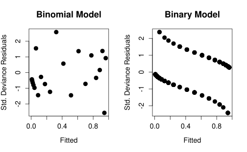
Binomial vs Binary: residuals and residual deviance
The residual deviance is also different. In fact, there is more residual deviance on the binary compared to the binomial model. However, comparing two binary and binomial models actually leads to the same conclusion. In other terms the deviance seems to be on a different scale1:
fit0_binary<-update(fit_binary, .~-x)# null binary modelfit0_binomial<-update(fit_binomial, .~-x)# null binary model
Binomial vs Binary: residuals and residual deviance
In fact, if we compare the full model with the null model in both binary and binomial version, the LRT is the same but the deviance is on a different scale. Comparing a binary with a binomial model could be completely misleading.
anova(fit_binomial, fit0_binomial, test ="Chisq")#> # A tibble: 2 × 5#> `Resid. Df` `Resid. Dev` Df Deviance `Pr(>Chi)`#> <dbl> <dbl> <dbl> <dbl> <dbl>#> 1 19 27.9 NA NA NA #> 2 20 158. -1 -130. 3.24e-30anova(fit_binary, fit0_binary, test ="Chisq")#> # A tibble: 2 × 5#> `Resid. Df` `Resid. Dev` Df Deviance `Pr(>Chi)`#> <dbl> <dbl> <dbl> <dbl> <dbl>#> 1 208 154. NA NA NA #> 2 209 285. -1 -130. 3.24e-30
Binomial vs Binary: type of predictors
This point is less relevant in this course but important in general. Usually, binary regression is used when the predictor is at the trial level whereas binomial regression is used when the predictor is at the participant level. When both levels are of interests one should use a mixed-effects model where both levels can be modeled.
the probability of correct responses during an exam as a function of the question difficulty (each trial/row could have a different \(x\) level)
the probability of passing the exam as a function of the high-school background regardless of having multiple trials, each trial/row has the same \(x_i\) for the participant \(i\)
Binomial vs Binary: type of predictors
The probability of correct responses during an exam as a function of the question difficulty
each question (i.e., trial) has a 0/1 response and a difficulty level
we are modelling a single participant, otherwise we need a multilevel (mixed-effects) model
the probability of passing the exam as a function of the high-school background
each “background” has different students that passed or not the exam (0/1)
Binomial vs Binary: type of predictors
#> # A tibble: 4 × 4
#> background nc nf nt
#> <chr> <chr> <chr> <chr>
#> 1 math 20 10 30
#> 2 chemistry 13 7 20
#> 3 art 10 0 10
#> 4 sport 15 5 20
Or the binary version:
#> # A tibble: 9 × 5
#> background nc nf nt y
#> <chr> <chr> <chr> <chr> <chr>
#> 1 math 20 10 30 1
#> 2 math 20 10 30 1
#> 3 math 20 10 30 1
#> 4 math 20 10 30 1
#> 5 ... ... ... ... ...
#> 6 sport 15 5 20 0
#> 7 sport 15 5 20 0
#> 8 sport 15 5 20 0
#> 9 sport 15 5 20 0
Binomial vs Binary: type of predictors
To note that despite we can convert between the binary/binomial, the two models are not always the same. The high-school background example can be easily modelled either with a binary or binomial model because the predictor is at the participant level that coincides with the trial level.
On the other side, the question difficulty example can only be modelled using a binary regression because each trial (0/1) has a different value for the predictor
To include both predictors or to model multiple participants on the question difficulty example we need a mixed-effects model where both levels together with the repeated-measures can be handled.
The mostly used link function when using a binomial GLM is the logit link. The probit link is another link function that can be used. The overall approach is the same between logit and probit models. The only difference is the parameter interpretation (i.e., no odds ratios) and the specific link function (and the inverse) to use.
The probit model use the cumulative normal distribution but the actual difference with a logit functions is neglegible.
Probit link
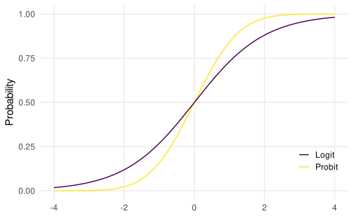
Probit link
When using the probit link the parameters are interpreted as difference in z-scores associated with a unit increase in the predictors. In fact probabilities are mapped into z-scores using the cumulative normal distribution.
p1<-0.7p2<-0.5qlogis(c(p1, p2))# log(odds(p1)), logit link
Parameters and effects interpretation is probably the hardest part of GLMs. The main reason is the non linearity of response vs the linearity of the link function. We have few options:
intepreting model coefficients directly or after transforming to known values (e.g., odds ratios)
intepreting predictions on the response scale
marginal effects
Intepreting model coefficients
Models coefficients are interpreted in the same way as standard regression models. The big difference concerns:
numerical predictors
categorical predictors
Using contrast coding and centering/standardizing we can make model coefficients easier to intepret.
Categorical predictors
We use a categorical predictor with \(k\) levels, the model will estimate \(k - 1\) parameters. The interpretation of these parameters depends on the contrast coding. In R the default is the treatment coding (or dummy coding). We can see the coding scheme using the model.matrix() function that return the \(\mathbf{X}\) matrix:
For the exam dataset, \(\beta_0\) is the reference level (default to 0 because is the first) and \(\beta_1\) is the difference between the second level and the reference level. Using, for example, the sum-to-zero coding we can change the \(\beta_0\) intepretation.
exam$tv_shows0<-ifelse(exam$tv_shows==0, -0.5, 0.5)fit<-glm(passed~tv_shows0, data =exam, family =binomial(link ="logit"))
Categorical predictors
# grand meanmean(c(mean(exam$passed[exam$tv_shows==1]), mean(exam$passed[exam$tv_shows==0])))
With numerical predictors the interpretation is less straightforward. Effects are linear only the logit scale. \(\beta_1\) is the increase in log-odds (of \(y\)) for a unit increase in \(x\) keeping fixed all other \(x\) s. Taking the inverse of the link function, \(e^{\beta_1}\) is the increase in odds ratio for a unit increase in \(x\).
Numerical predictors
Numerical predictors, centering and scaling
If we remove a constant value from a numerical predictor we are centering on that value. Usually we center on the mean, but other values are still possible. Centering affects only the intepretation of the constant terms, thus \(\beta_0\).
Standardizing requires dividing (and most of the time also centering) the predictor. Usually we standardize using the standard deviation of the predictor. This transform the predictor in standard deviation units.
\[
x_{i_0} = x_i - \bar x
\]
\[
x_{i_z} = \frac{x_i - \bar x}{\sigma_x}
\]
Numerical predictors
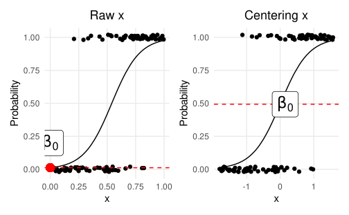
Numerical predictors
Let’s return to our teddy child example and fitting the proper model:
fit_glm<-glm(Depression_pp01~Parental_stress, data =teddy, family =binomial(link ="logit"))summary(fit_glm)
#>
#> Call:
#> glm(formula = Depression_pp01 ~ Parental_stress, family = binomial(link = "logit"),
#> data = teddy)
#>
#> Coefficients:
#> Estimate Std. Error z value Pr(>|z|)
#> (Intercept) -4.323906 0.690689 -6.260 3.84e-10 ***
#> Parental_stress 0.036015 0.009838 3.661 0.000251 ***
#> ---
#> Signif. codes: 0 '***' 0.001 '**' 0.01 '*' 0.05 '.' 0.1 ' ' 1
#>
#> (Dispersion parameter for binomial family taken to be 1)
#>
#> Null deviance: 284.13 on 378 degrees of freedom
#> Residual deviance: 271.23 on 377 degrees of freedom
#> AIC: 275.23
#>
#> Number of Fisher Scoring iterations: 5
Numerical predictors
The (Intercept) (\(\beta_0\)) is the probability of having post-partum depression for a mother with parental stress zero (maybe better centering?)
The Parental_stress (\(\beta_1\)) is the increase in the \(log(odds)\) of having the post-partum depression for a unit increase in the parental stress index. If we take the exponential of \(\beta_1\) we obtain the increase in the \(odds\) of having post-partum depression for a unit increase in parental stress index.
The problem is that, as shown before, the effects are non-linear on the probability scale while are linear on the logit scale. On the logit scale, all differences are constant:
pr<-list(c(10, 11), c(50, 51), c(70, 71))predictions<-lapply(pr, function(x){predict(fit_glm, newdata =data.frame(Parental_stress =x))})# notice that the difference is exactly the Parental_stress parametersapply(predictions, diff)
#> 2 2 2
#> 0.0360147 0.0360147 0.0360147
Numerical predictors
While on the probability scale, the differences are not the same. This is problematic when interpreting the results of a Binomial GLM with a numerical predictor.
In a similar way we can use the inverse logit function to find the predicted probability specific values of \(x\). For example, the difference between \(p(y = 1|x = 2.5) - p(y = 1|x = 5)\) can be calculated using the model equation:
In R we can use directly the predict() function with the argument type = "response" to return the predicted probabilities instead of the logits:
preds<-predict(fit, newdata =list(x =c(2.5, 5)), type ="response")preds
#> 1 2
#> 0.9999999 1.0000000
preds[2]-preds[1]
#> 2
#> 1.057591e-07
Marginal effects: a really comprehensive framework
The marginaleffectspackage provide a very complete and comprehensive framework to compute marginal effects for several models. You can have a very detailed overview of the theory and the functions reading:
The marginal effect is the change in the response variable for a tiny change in the predictor. Is the slope (or the derivative) for a given \(x\) value.
In standard linear models, effects are linear also in the response (identity link) thus we have a single slope/derivative by definition.
In GLMs we the rate of increase in \(y\) depends on the \(x\) value thus evaluating the effect on the response is more complicated.
The marginaleffects provides a very clear framework to evaluate these effects in several models including the GLMs.
Marginal effects
Let’s imagine a simple y ~ x relationship on the probability scale. For each different tiny increase in \(x\) we have an increase in \(y\).
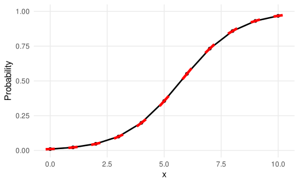
Marginal effects
Now let’s plot all the red slopes and see what we can learn:
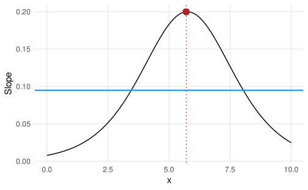
Marginal effects
The blue line is the average slope. In other terms is the average increase in \(y\) for an unit increase in \(x\). We can say that on average, an increase in \(x\) produces an increase of 0.1 in terms of probability.
The red dot is the maximal slope. In other terms is the maximal increase in \(y\) for a specific unit increse in \(x\). We can say that the maximal increase in \(y\) (~ 0.2) happens when \(x\) is ~ 5.7.
Marginal effects
These two ways of summarising a non-linear relationships are called respectively average marginal effect and maximal marginal effect.
For more complex models and multiple predictors there is the marginaleffects package.
#> # A tibble: 6 × 17
#> ID Children Fam_status Education Occupation Age Smoking_status
#> <int> <int> <chr> <chr> <chr> <int> <chr>
#> 1 1 1 Married High school Full-time 42 No
#> 2 2 1 Married High school Full-time 42 No
#> 3 3 1 Married High school Full-time 44 No
#> 4 4 2 Married High school Full-time 48 No
#> 5 5 3 Married Degree or higher Full-time 39 Yes
#> 6 6 2 Married Degree or higher Full-time 38 Ex-smoker
#> # ℹ 10 more variables: Alcool_status <chr>, Depression_pp <chr>,
#> # Parental_stress <int>, Alabama_involvment <int>, MSPSS_total <dbl>,
#> # LTE <int>, Partner_cohesion <dbl>, Family_cohesion <dbl>,
#> # Depression_pp01 <dbl>, Parental_stress_c <fct>
Marginal effects
fit_teddy<-glm(Depression_pp01~Parental_stress, data =teddy, family =binomial(link ="logit"))summary(fit_teddy)
#>
#> Call:
#> glm(formula = Depression_pp01 ~ Parental_stress, family = binomial(link = "logit"),
#> data = teddy)
#>
#> Coefficients:
#> Estimate Std. Error z value Pr(>|z|)
#> (Intercept) -4.323906 0.690689 -6.260 3.84e-10 ***
#> Parental_stress 0.036015 0.009838 3.661 0.000251 ***
#> ---
#> Signif. codes: 0 '***' 0.001 '**' 0.01 '*' 0.05 '.' 0.1 ' ' 1
#>
#> (Dispersion parameter for binomial family taken to be 1)
#>
#> Null deviance: 284.13 on 378 degrees of freedom
#> Residual deviance: 271.23 on 377 degrees of freedom
#> AIC: 275.23
#>
#> Number of Fisher Scoring iterations: 5
With more predictors we can calculate marginal effects, controlling for other variables:
data(teddy)teddy$Depression_pp01<-ifelse(teddy$Depression_pp=="Yes", 1, 0)fit_teddy<-glm(Depression_pp01~Parental_stress+Family_cohesion, data =teddy, family =binomial(link ="logit"))summary(fit_teddy)
#>
#> Call:
#> glm(formula = Depression_pp01 ~ Parental_stress + Family_cohesion,
#> family = binomial(link = "logit"), data = teddy)
#>
#> Coefficients:
#> Estimate Std. Error z value Pr(>|z|)
#> (Intercept) -7.898099 2.046838 -3.859 0.000114 ***
#> Parental_stress 0.036140 0.009921 3.643 0.000270 ***
#> Family_cohesion 1.249750 0.662557 1.886 0.059261 .
#> ---
#> Signif. codes: 0 '***' 0.001 '**' 0.01 '*' 0.05 '.' 0.1 ' ' 1
#>
#> (Dispersion parameter for binomial family taken to be 1)
#>
#> Null deviance: 284.13 on 378 degrees of freedom
#> Residual deviance: 267.60 on 376 degrees of freedom
#> AIC: 273.6
#>
#> Number of Fisher Scoring iterations: 5
When using categorical variables, the emmeans package is more effective (despite the marginaleffects package can be used). The idea is to calculate the predicted probabilities for combinations of (categorical) predictors and eventually compute contrasts between means.
fit_teddy<-glm(Depression_pp01~Education, data =teddy, family =binomial(link ="logit"))summary(fit_teddy)
#>
#> Call:
#> glm(formula = Depression_pp01 ~ Education, family = binomial(link = "logit"),
#> data = teddy)
#>
#> Coefficients:
#> Estimate Std. Error z value Pr(>|z|)
#> (Intercept) -1.9315 0.2393 -8.073 6.87e-16 ***
#> EducationHigh school 0.0205 0.3212 0.064 0.949
#> EducationMiddle school -0.5942 0.7728 -0.769 0.442
#> ---
#> Signif. codes: 0 '***' 0.001 '**' 0.01 '*' 0.05 '.' 0.1 ' ' 1
#>
#> (Dispersion parameter for binomial family taken to be 1)
#>
#> Null deviance: 284.13 on 378 degrees of freedom
#> Residual deviance: 283.37 on 376 degrees of freedom
#> AIC: 289.37
#>
#> Number of Fisher Scoring iterations: 5
#> Education emmean SE df asymp.LCL asymp.UCL
#> Degree or higher -1.93 0.239 Inf -2.40 -1.46
#> High school -1.91 0.214 Inf -2.33 -1.49
#> Middle school -2.53 0.735 Inf -3.97 -1.09
#>
#> Results are given on the logit (not the response) scale.
#> Confidence level used: 0.95
#> Education prob SE df asymp.LCL asymp.UCL
#> Degree or higher 0.1266 0.0265 Inf 0.0831 0.188
#> High school 0.1289 0.0241 Inf 0.0886 0.184
#> Middle school 0.0741 0.0504 Inf 0.0186 0.252
#>
#> Confidence level used: 0.95
#> Intervals are back-transformed from the logit scale
Inverse estimation1
Sometimes it is useful to do what is called inverse estimation, thus predicting the \(x\) level associated with a certain \(y\). In this case the \(x\) producing a certain \(p\) of response.
Sometimes this is called median effective dose when finding the \(x\) level producing \(50\%\) of correct responses.
We can use the MASS::dose.p() function. Clearly, the range of the predictor need to be meaningful. Predicting the probability of post partum depression being 0.9 is probably meaningless given the bounded nature of the predictor variable.
Inverse estimation
Still using the TeddyChild dataset, an application could be to estimate the level of parental stress required to have a certain probability of post-partum depression. For example:
fit_teddy<-glm(Depression_pp01~Parental_stress, data =teddy, family =binomial(link ="logit"))MASS::dose.p(fit_teddy, p =c(0.5, 0.7, 0.8))
#> Dose SE
#> p = 0.5: 120.0595 14.80923
#> p = 0.7: 143.5859 21.03040
#> p = 0.8: 158.5519 25.04193
Inverse estimation and Psychophysics
In Psychophysics it is common to do the inverse estimation to estimate the detection or performance threshold. For example, estimating the \(x\) level associated with a certain probability of success e.g. 50%.
Arel-Bundock, V., Greifer, N., & Heiss, A. (2024). How to Interpret Statistical Models Using marginaleffects for R and Python. Journal of Statistical Software, 111, 1–32. https://doi.org/10.18637/jss.v111.i09
Sánchez-Meca, J., Marín-Martínez, F., & Chacón-Moscoso, S. (2003). Effect-size indices for dichotomized outcomes in meta-analysis. Psychological Methods, 8, 448–467. https://doi.org/10.1037/1082-989X.8.4.448